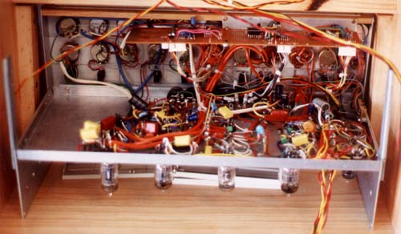

|
Tube Synth |
|
 These are just a couple of quick photos of my tube synth as of March 2001. Most of the work was done during the Christmas break, with the two beam modulators being constructed since. The top rack contains the Hellfire clone, and the two 6BN6 type modulators, one with two tube voltage controlled amps. The bottom rack contains the two 1 volt per octave VCOs, Modulators, VCF, Beam modulator and a preamp. Article, art & design copyright 2000 by Ken Stone
|